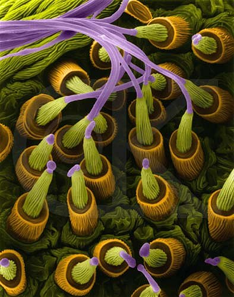

Having looked at some of the physics of Spider-Man, this section will try to develop our previous findings and try to assess how realistic the film is. Furthermore, we will try to explain how we might be able to imitate or reproduce equivalents of Spider-Man's inventions in our own world, given the technological advances that we have already made.
In the last section we determined that the UTS (ultimate tensile strength) of Spider-Man's webs was about 5000Mpa - 5x the strength of 'average' spider silk and 10x as strong as structural steel[1]. We (the real world), however, has never managed to properly reproduce regular spider silk artifically, let alone super strength silk. Spider silk has long been coveted due to its impressive properties - it has an extraordinary strength:weight ratio (6x that of steel), and is highly recyclable/biodegradable -
some spiders eat their webs and are able to recycle it with up to 90% efficiency. Another important detail in the comparison between spider silk and nylon or other polymers is the fact that spiders produce their silk at room temperature and pressure with the main component being water - the production of nylon, on the other hand, is a high energy-using process with harmful ingredients and a large carbon footprint.
There has always been a problem in trying to produce spider silk in viable quantities. You can't farm them in the same way that you would silkworms - spiders are 'aggressive, solitary characters who, if confined in one space, eat each other'[2a]. There has, therefore, been a long and difficult road in trying to determine how to synthetically produce spider silk. One of the main parts of the problem is the fact that it's not just a matter of material.
We've had a rough idea of what spider silk is from as early as the 60's - a filamentous structure like egg white made up of two different kinds of protein. These proteins create a composite structure that make it tough for cracks to propgate - hence the strength of the material. Some think, however, that it's not just a matter of being able to recreate the structure of the material that will mean we can reproduce it. Spiders spin their webs from an organ called 'spinnerets' as seen here[a].

A spider can have up to 600 of these silk secreting nodules. Note that the image is from an electron microsope and has therefore been coloured in. Many researcheres believe that the secret in making the silk have the properties that it has is in the mechanical process of spinning. Forbes writes[2b]:
"Textile spinners know very well the importance of the spinning process. Nylon was not immediately recognised as a superior fibre because when it was first made in 1933 it could not be spun. It was only discovered four years later...
that once nylon was formed it could be toughened immensely by stretching the cold fibre. A mechanical drawing-out process within the spinneret achieves something similar for spider silk."
With this understanding, therefore, how close are we to reproducing spider silk? An article published by Smithsonian magazine in late July this year claimed that 'researchers at the University of Cambridge have created a new material that mimics spider silk’s strength, stretchiness and energy-absorbing capacity'[3]. The article goes on to say:
The lab-made fibers are created from a [type of] material called a hydrogel, which is 98 percent water and 2 percent silica and cellulose, the latter two held together by cucurbiturils, molecules that serve as “handcuffs.” The silica and cellulose fibers can be pulled from the hydrogel. After 30 seconds or so, the water evaporates, leaving behind only the strong, stretchy thread.
Like spider silk, this material can be made at room temperature without harmful solvents, is biodegradable and could potentially be modified (by changing the silica/cellulose to other materials) to alter the material's properties. Could this be the way forward to Spider-Man's web? Perhaps, although many critics over the years have accurately reported that periodically a spider silk breakthrough story appears in the news, only to fall silent quickly without any products entering the market.
This company are currently trying to perform further research and are looking into designing a robotic device to pull and spin fibres faster and at a larger scale than before - much like how the spider's spinnerets work to improve the qualities of the web. We will hopefully hear more about this in the near future, and we will look at some of the applications for spider silk (both regular and super-strength) in the next section of this project. For now, however, it looks like we're just going to have to wait.
Another aspect of Spider-Man's webs that we might want to consider is how he stores them, how much he needs and subsequently how big a container is required to hold that much. As aforementioned in the last section, Peter Parker uses small canisters to store his bio-engineered webs before firing them. The scene in which he designs this web-firing device is here[?].
The video states that a single one of these canisters (pictured below) can safely store 'several hundred metres of the lightweight cable'. Rather than try to deal with the semantics of 'several', I'm going to assign it the value of 5, i.e. 500 metres of cable. Using the same radius of web that we used previously (2mm) and this picture as a rough reference for how big each canister is, we can start to consider how he carries all that web.
Assuming that the dimensions of the canister are around 3cm x 2cm x 1cm, we can draw rough models of what the insides of the containers would look like.
These are two potential designs for how the web would fit into these canisters - I chose to expand the dimensions slightly in order to accomodate for the radius of the web.
We want to consider the 'packing efficiency' or atomic packing factor (APF) of these two designs - this will tell us which way of packing in the webs will utilise the available space best. Note also that for simplicity's sake I'm assuming that the web is able to fold back on itself in a perfect way so that it occupies no additional space. The APF is a dimensionless (without units) value and is given by the formula:
Where Nparticle is the number of particles in the area we're trying to work out, Vparticle is the volume of the particles and Vunit cell is the volume of the container. In this instance, the particles are the circles, the unit cell is the canister and instead of volumes we're considering just areas as it's a 2-dimensional diagram. For each of the two designs, this gives us:
Although the second design fits in one fewer circle/strand of web, it is overall more efficient in the way it uses the space available. This is useful knowledge as we'll want to scale up the container and this design will help us yield better results over a larger area. This would also make for a marginally lighter design which would be more practical from Spider-Man's perspective.
So if the volume of each canister is 6.6x10-6m3 (1.1cm*2cm*3cm) and the APF is about 80%, that gives us 5.28x10-6m3 of string per canister. Divide that number by the cross sectional area of the string (4πx10-6m2) and we should get a length of string contained. In this instance, it works out as approximately 42.0cm of web per canister, meaning Spider-Man would
have to carry almost 1200 canisters with him to hold the desired 500m. This is obviously not ideal but also ignores the fact that there could be some compression factor within the canister - it could be stored more densely/packed more closely together. This then prompts the question: How big would this canister need to be to hold the required amount of web?
We can multiply the cross sectional area of the web by 500m to find the total volume of web we'll have:
Which we can equate to:
This makes it slightly easier for us to picture just how big this amount of web is - about 6 litres. This, however, is still only the amount of web - because of the packing efficiency that we talked about earlier, we're going to have to scale this up to the right container size:
This is a huge volume compared to what we see in the fiction and is far beyond practical. For reference, 8 litres is around the capacity of an average children's rucksack (shown below).
Finally, for this section, we will consider how we could mimic Spider-Man's wall climbing ability. We unpicked this mechanism last section with some research done on the Gecko. We were, however, left with the problem of how Spider-Man would stick to walls through his suit if his skin had adapted to be like gecko skin. The answer may lie with this video created by a team at UMass (University of Massachussets, Amherst), who have invented 'Geckskin': a device using that same gecko mechanism which can hold up to 700 pounds (over 300kg). Have a look for yourself here[c]:
This seems like the solution - if we had strips of this that we could attach to hands or feet, given the surface area of the sheet they use and the cumulative surface area of two hands and feet, it would definitely be strong enough for a man or woman to scale a building. This adhesive is ideal as it requires minimal force to peel off and thus keep moving, and it is also reusable for a long time. It solves the problem that we encountered last section as well.
That seems to be a neat wrapping up of this section! We will next take a look at why any of these findings are of interest to us and the potential uses we could find for this technology.


{kind=link}